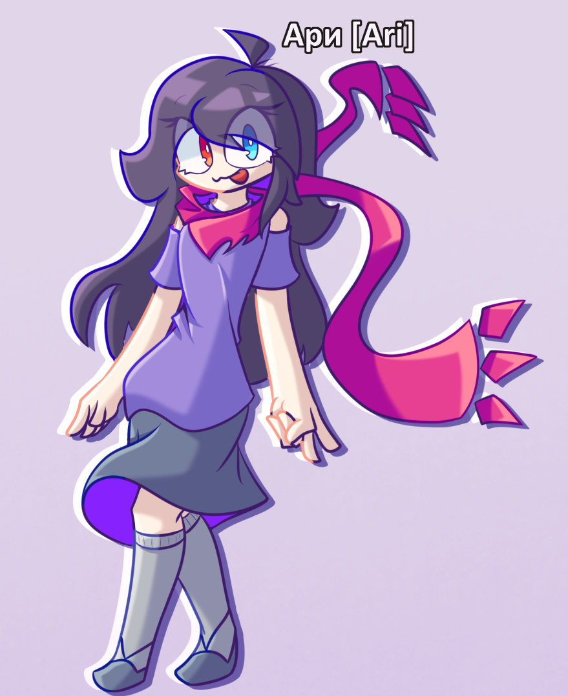
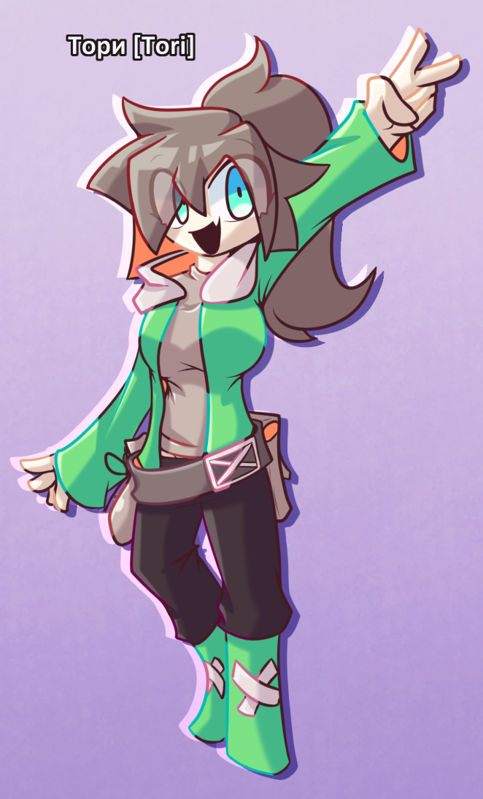
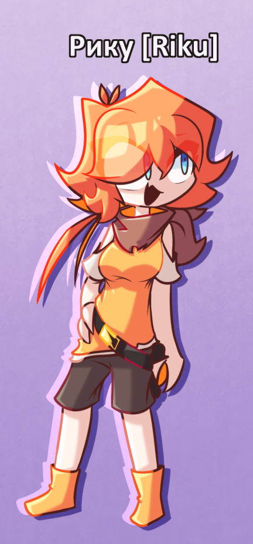

-

- Имя: Кетерру (eng: Keterru)
Информация о персонаже:
Первая версия Имени: Ендер (eng: Ender)
Вселенная: GlitchFont
Возраст: 18 Лет
Пол: Мужской
Раса: Фантомный_Глюк (подвид: Глюк)
Связи: Гличи[Слуга/Рабыня], Асута/Ари/Еко/Няки/Нанаши[Враги], Роно["Читер..."]
*По логике должен быть главным злодеем... но ему влом.
*Часто понимает абсурдность некоторых ситуаций из за чего ломает весь пафосный настрой.
*Пофигист, токсик, ну и просто говнюк.
- Имя: Кетерру (eng: Keterru)
-

- Имя: Асута (eng: Asuta)
Информация о персонаже:
Первая версия Имени: Астер (eng: Aster)
Вселенная: GlitchFont
Возраст: 24 Года
Пол: Мужской
Раса: Человек
Связи: Ари[Сестра], Роно[Мать], Нанаши/Эко/Няки/Тори/Кирико["Друзья"], Кетерру[Враг и ублюдок]
*Безэмоциональный.
*Изучает психологию и медицину.
*Заботливый брат.
*Имеет женственную внешность.
- Имя: Асута (eng: Asuta)
-

- Имя: Ари (eng: Ari)
Информация о персонаже:
Первая версия Имени: Ариал (eng: Arial)
Вселенная: GlitchFont
Возраст: 19 Лет
Пол: Женский
Раса: Человек
Связи: Асута[Брат], Роно[Мамочка], Гличи/Еко/Няки/Тори/Кирико/Рику/Сакико[Друзьяшки], Кетерру["Вот бы его кастрировать..."]
*Эмоциональная и жизнерадостная булочка!
*Часто любит путешествовать по разным местам.
*Имеет коллекцию шарфов.
- Имя: Ари (eng: Ari)
-

- Имя: Гличи (eng: Glitchy)
Информация о персонаже:
Вселенная: GlitchFont
Возраст: 3 года (Системный возраст: 19 лет)
Пол: Женский
Раса: Глюк
Связи: Кетерру[Хозяин], Ари[Враг?/Лучшая подруга], Нанаши["бедная душа..."],
*Является программой для выполнения вычеслительных задач.
*Из за лени Кетерру, является его рабыней/слугой.
*Скромная, и очень добрая.
- Имя: Гличи (eng: Glitchy)
-

- Имя: Няки (eng: Nyaki)
Информация о персонаже:
Первая версия Имени: Ники (eng: Niki)
Вселенная: GlitchFont
Возраст: 18 Лет
Пол: Женский
Раса: Неко (подвид: Человек)
Связи: Еко[Любимый], Ари[Забавная подруга], Кирико["... ... волчара"]
*Спокойная, рассудительная, строгая.
*Имеет проблемы с болью в спине.
*Ненавидит горячие блюда.
- Имя: Няки (eng: Nyaki)
-

- Имя: Тори (eng: Tori)
Информация о персонаже:
Первая версия Имени: Пейнти (eng: Painty)
Вселенная: GlitchFont
Возраст: 21 Год
Пол: Женский
Раса: Человек
Связи: Кетерру/Асута/Ари/Гличи/Еко/Няки/Тори/Кирико/Роно/Рику/Сакико[ДРУГАНЫЫЫЫ!]
*Глуповатая но вечно-весёлая девушка.
*Обожает рисовать и жрать.
- Имя: Тори (eng: Tori)
-

- Имя: Кирико (eng: Kiriko)
Информация о персонаже:
Вселенная: GlitchFont
Возраст: 19 Лет
Пол: Женский
Раса: Вульф (подвид: Человек)
Связи: Тори[Подруга], Няки["Забавная кошка"], Ари[Милая подруга]
*Тихая и жизнерадостная девушка.
*Любит жевать что-нибудь твёрдое (например кости).
*Когда радуется она веляет хвостом.
- Имя: Кирико (eng: Kiriko)
-

- Имя: Роно (eng: Rono)
Информация о персонаже:
Первая версия Имени: Роуз Нот (eng: Rose Note)
Вселенная: GlitchFont
Возраст: 48 Лет
Пол: Женский
Раса: Призрак/Фантом
Связи: Рику[Подруга], Асута/Ари[Любимые дети], Кетерру["Воняет слабостью"]
*Наплевала на смерть и продолжает существовать как ни в чём не бывало.
*Очень любит своих детей.
*Имеет ярко-фиолетовые глаза которые светятся во тьме.
- Имя: Роно (eng: Rono)
-

- Имя: Рику (eng: Riku)
Информация о персонаже:
Вселенная: GlitchFont
Возраст: 43 Года
Пол: Женский
Раса: Гарпия (подвид: Человек)
Связи: Роно[Подруга], Асута/Ари[Мелюзга], Кетерру["Грёбанный кусок дерьма который должен сдохнуть к чёртовой матери!"], Сакико[Милая юная леди.]
*Для своего возраста уж СЛИШКОМ молодо выглядит.
*Имеет комплексы к своей внешности.
*Обожает путешествовать.
- Имя: Рику (eng: Riku)
-

- Имя: Нанаши (eng: Nanashi)
Информация о персонаже:
Первая версия Имени: Неймэлес (eng: Nameless)
Вселенная: GlitchFont
Возраст: 23 года
Пол: Мужской
Раса: ЕХЕ
Связи: Сакико[Сестра.]
*Безэмоциональный и строгий.
*Готов пойти на убийство ради защиты своей сестры.
*В плаще есть пространственное хранилище в котором он хранит оружие.
- Имя: Нанаши (eng: Nanashi)